Información Importante sobre Avalonianas
Una Dungeon Avaloniana (También llamados Elite Dungeons), es la dungeon más difícil que hay en el juego, donde se pone a prueba tus reflejos y tu capacidad de juego al tener que evadir la muerte constantemente de los ataques del enemigos. Si cometes un error así sea por 1 segundo podrías morir y puedes provocar que toda tu party muera.
Consideraciones
- Llevar Mochila de Tier alto y Montura con pasiva de Mensajero.
- Montura de peso con pasiva de Mensajero.

- Llegar al IP mínimo requerido usando como máximo una capa 4.2 sin calidad.
- Usa tus Defensivos, no te los guardes un descuido te puede matar.
- La Guia esta Diseñada para hacer los Pulls completos...
- ETS 30 Minutos por Sección.

- La Seccion se divide por los pulles antes de cada puerta, incluyendo el jefe. dependiendo del jefe este aumenta a 45 - 50 minutos.
Item Power Minimo por Avaloniana
| Item Power | Plana | .1 | .2 | .3 |
|---|---|---|---|---|
| Tier 6 Capa 4.2 | 1100 | 1200 | 1300 | 1400 |
| Tier 7 Capa 4.2 | 1200 | 1300 | 1400 | 1500 |
| Tier 8 Capa 4.2 | 1300 | 1400 | 1500 | 1600 |
Monturas con pasiva Mensajero
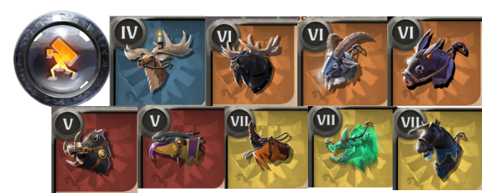Secuencia de Stun
🔹Secuencia: Gran Arcano ▶ Martillo ▶Arcano de 1 mano ▶ Gran Arcano ▶ Martillo ▶ 1h Arcano
Con esta secuencia de stun mantienes a los mobs paralizados.
👀Durante el stun del martillo pega El Realmbreaker, incubos y ShadowCaller
Si lleva un Badon este debe pegar luego del arcano de 1 mano
¿Como Pulleo?
Secuencia de pasos. Tanque secundario Anillo, Freeze, Secuencia de Stuns
El Tanque principal llama a un mob con el Taunt Al instante el Tanque secundario pone el anillo. Al momento que los mobs toquen el Anillo el Arcano Principal los Freezea, Acto seguido la Secuencia de Stuns y daño.
La Secuencia de Stuns dura un máximo de 15 segundos en que los mobs no deben moverse para nada.
Tanque Principal
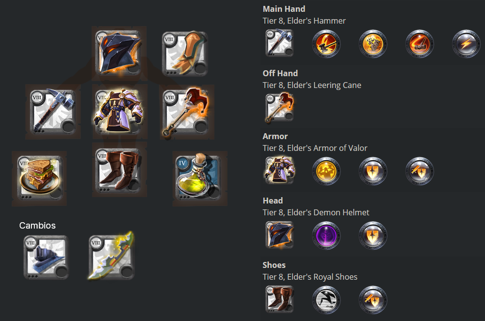Variantes
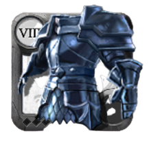 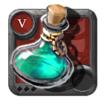 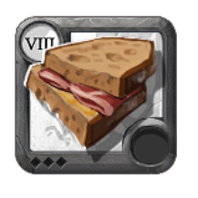Tanque Secundario
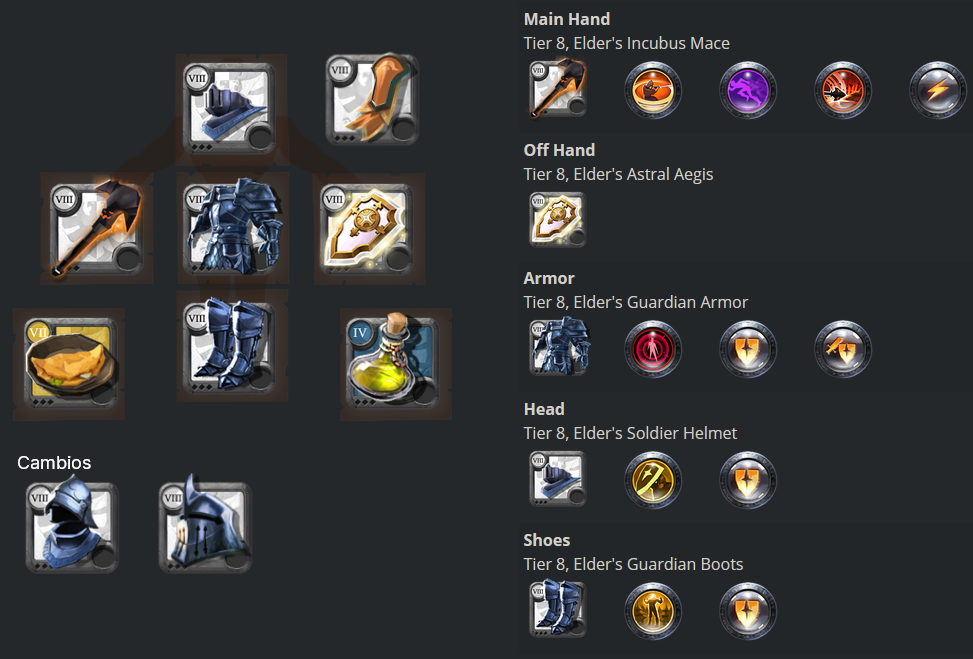Variantes
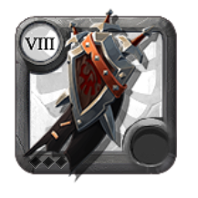 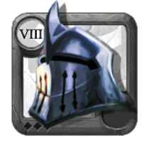
Se usa en el ultimo jefe, Sir Bedivere. Lo usas cuando tengas 3 cargas y luego cada vez que tengas CD.
🔸Eso en caso tal lo tanquees tú y no estes usando la capucha de tenacidad
🔹En caso tal el Tanque no tenga quien le quite las cargas, ese seria tú trabajo
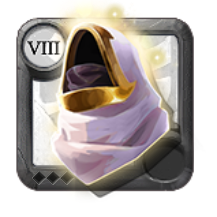
Es posible cortar la curación del jefe con la capucha de tenacidad junto con la E de la incubo.
Si se hacer esto, es necesario que alguien vaya a quitarle las cargas al tanque.
Healer Principal
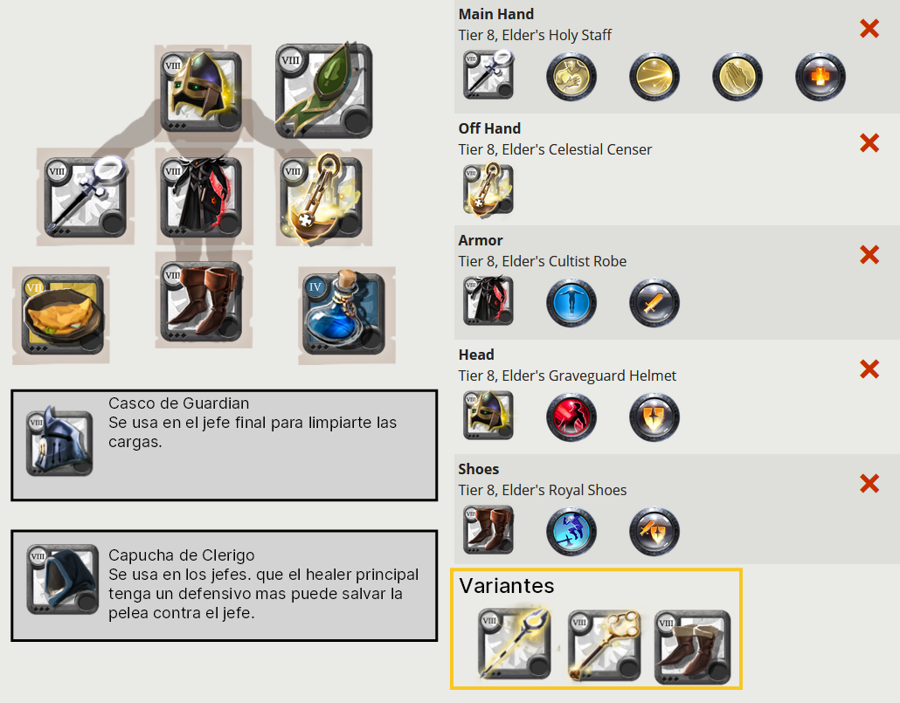Variantes
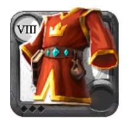Healer Party
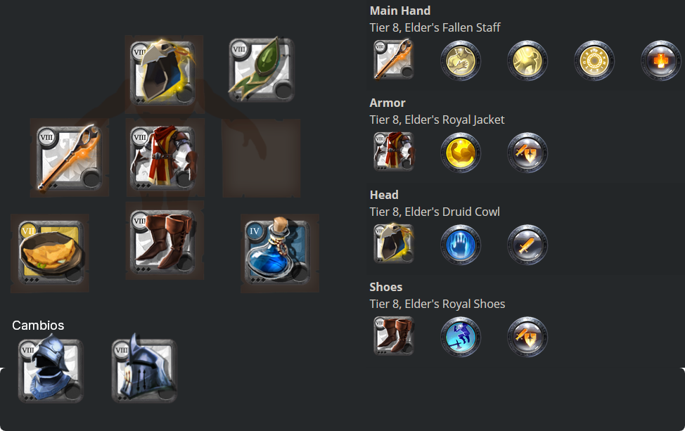
Se usa en el ultimo jefe, Sir Bedivere. Lo usas cuando tengas 3 cargas y luego cada vez que tengas CD.
🔸Se lleva en tier bajo (4) para no sacarle el agro al Tanque
Gran Baston Arcano
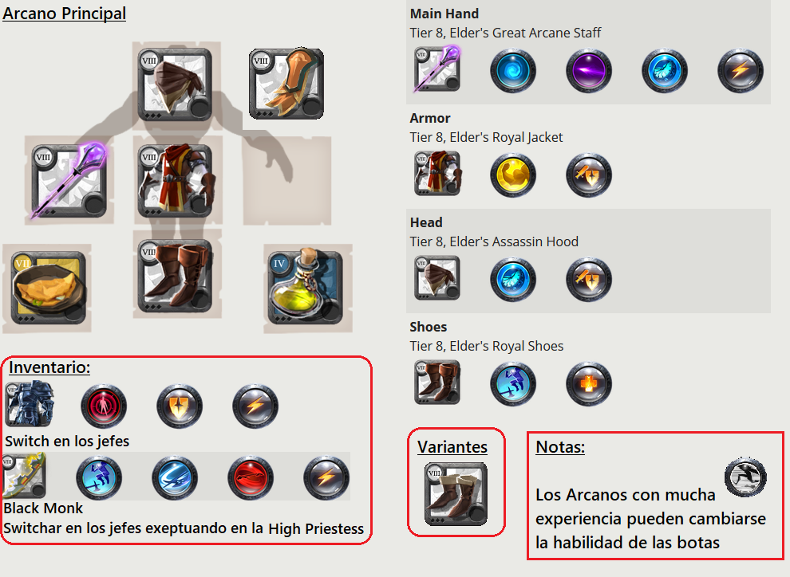Cambios
Se usa en el ultimo jefe, Sir Bedivere. Lo usas cuando tengas 3 cargas y luego cada vez que tengas CD.
🔹Le Quitas las Cargas al Healer Principal
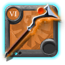 Se usa en el Basilisco, justo antes del "nuke" (Ver Video)
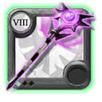
Se usa en el ultimo jefe, Sir Bedivere. y lo usas para proporcionar mana al healer o tanque principal
En la Segunda fase esta pendiente a quien "ahorca" el jefe y a esa persona le das tu E
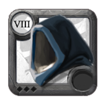 Es recomendable usarlo en el ultimo jefe, Sir Bedivere. ya que si el jefe te "Ahorca" usas este casco y no recibiras daño.
1h Arcano
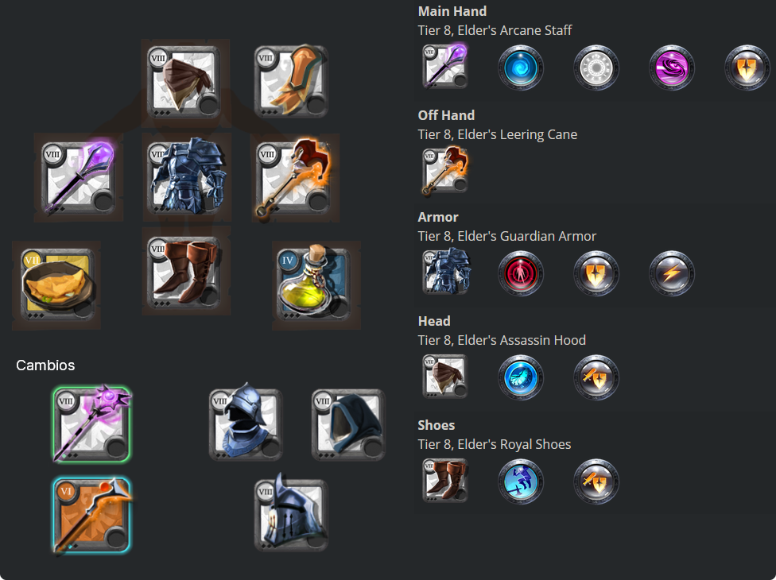Cambios
Se usa en el ultimo jefe, Sir Bedivere. Lo usas cuando tengas 3 cargas y luego cada vez que tengas CD.
🔹Le Quitas las Cargas al Healer Principal
Se usa en el Basilisco, justo antes del "nuke" (Ver Video)
Se usa en el ultimo jefe, Sir Bedivere. y lo usas para proporcionar mana al healer o tanque principal
En la Segunda fase esta pendiente a quien "ahorca" el jefe y a esa persona le das tu E
Es recomendable usarlo en el ultimo jefe, Sir Bedivere. ya que si el jefe te "Ahorca" usas este casco y no recibiras daño.
Set Arcano para pullear 1 mob
Usable en partys con baja o ninguna experiencia que quieran hacer estas Dungeons.
Debe llevar un set extra para los jefes.
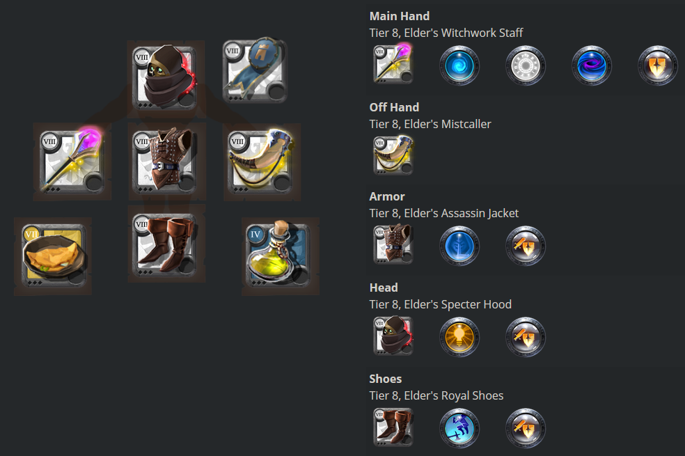Consiste en "Absorber" el mob con el borde del area de la E
Luego que la habilidad "cierra" tiras el pecho para hacerte invi
Si lo hiciste bien, el mob vendra hacia ti, lo que tendras que hacer es traerlo hacia tu party, para que el tanque con martillo lo stunee
Usa la Q en ti mismo para salvarte de los hits
Variante
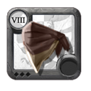
ShadowCaller
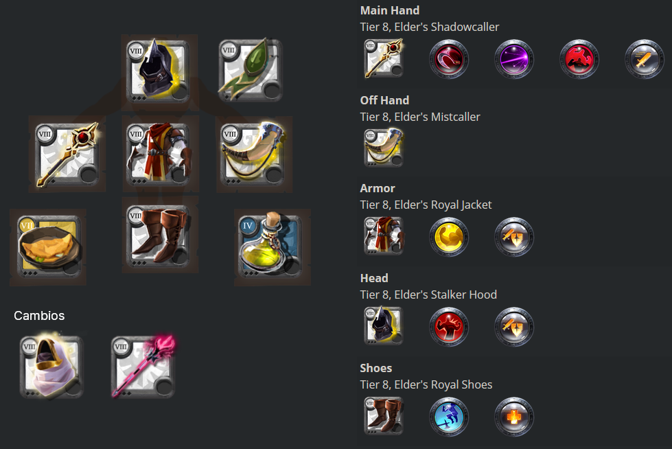En el ultimo jefe, Sir Bedivere. Este al llegar a la mitad de su vida empezara a canalizar. cuando veas que esta canalizacion esta a la mitad, entras con tus botas.
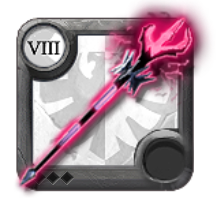
Usas tu Casco y Tu baston para cortarle la curacion.
Uno de los Enigmaticos deben centrar su E en ti, y el otro Enigmaticos debe esperar a que acabe la Canalizacion
IronRoot
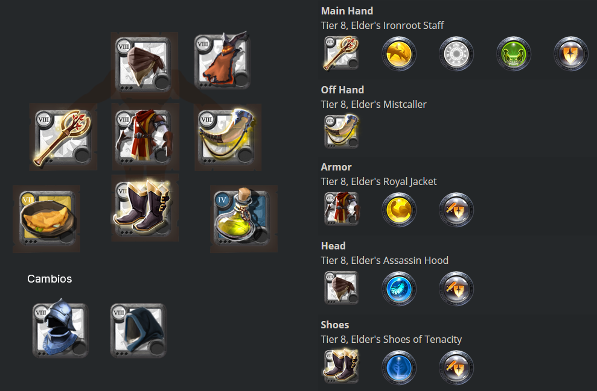Informacion
Usas tu E para linkear a 2 mobs Grandes.
En caso tal, hales agro usas tus botas.
Si vez que los arqueros silencian a los healers usa tu W para limpiarlos
Sugerencias para Jefes
Usa lo que gustes
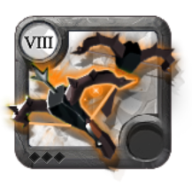 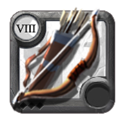 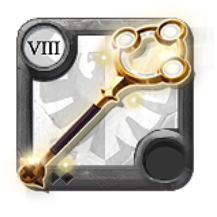 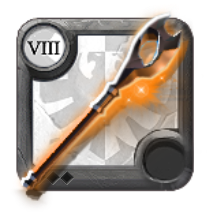Rango DPS
Información: Cualquier opción DPS a continuación requerirá un cambio de arma para Single Target la cual se va a usar Exclusivamente para los jefes, por lo tanto deberá llevar 2 armas en el inventario. 1 la de los pulls que sería daño en AOE y la de los jefes que será Single target como en las avalonianas que se hacían antes de la actualización.
Algunas armas no se Stackean por lo tanto deben Callearse antes de lanzar y seguido que termine ese habilidad el siguiente callea su E y la lanza. Ejemplo: Blazing Staff Deberán coordinarse.
PD: Esperen a que el Tanque genere el Agro suficiente de los mobs antes de pegar ya que si lo pierde Ustedes Van a MORIR 🥱 esperan un segundo o 2 y atacan.
Ballesta Ligera
Es la que mas DPS hace
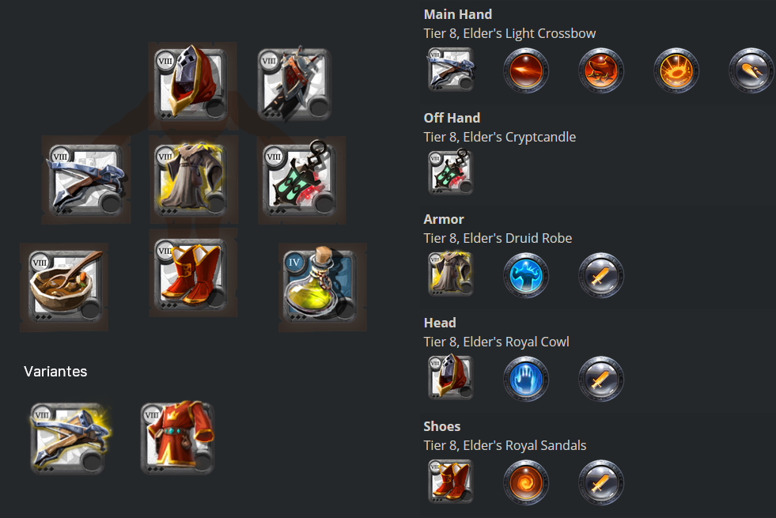Rotacion
RF👉 Qx3 👉 WE 👉 QQ 👉 DW 👉 QQ
Frost
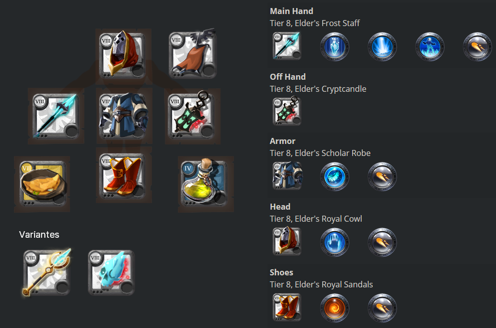Rotacion
D F W 👉 R (E) 👉 Spam Q
Blazing Staff
⛔1 por party
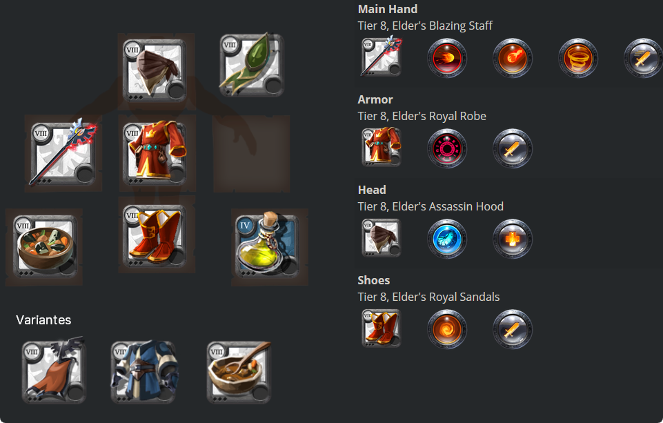Rotacion
RF 👉 Q W Q 👉 E 👉 D
Arco Badon - Max 1x Party💀
Pegas luego del 2do arcano
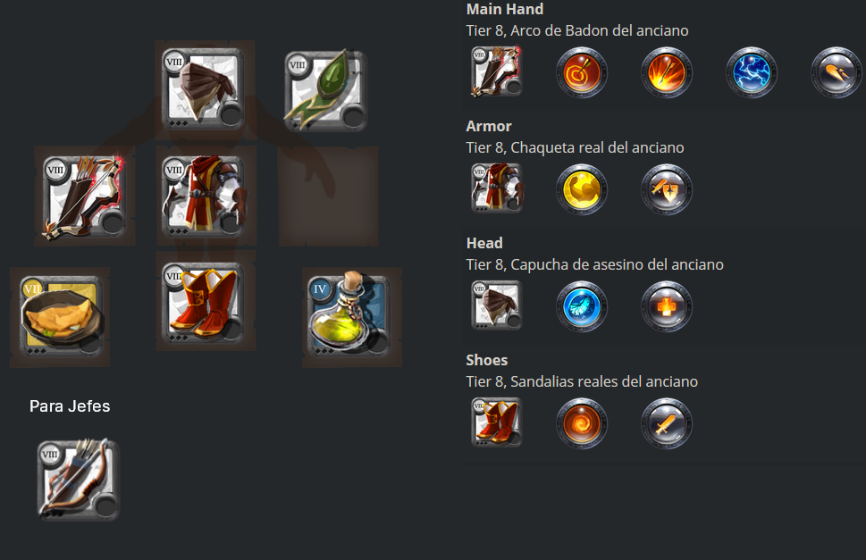Rotacion
FQ 👉 WE 👉 RD
Melee Builds
Maximo 1 por Party💀
Dificultad de uso: 🌟🌟🌟🌟⭐
Si no tienes experiencia en las Avas mejor ve de Rango DPS
Spirithunter
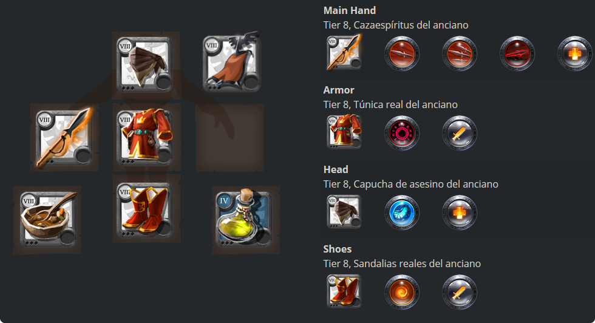Rotacion
RF 👉 Q W Q 👉 E 👉 D
Rompedor de Reinos
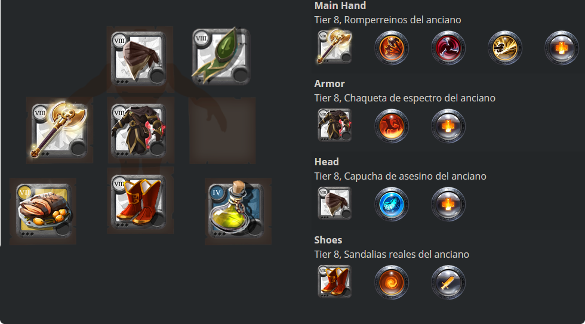Rotacion
R F W 👉 Qx3 👉 E 👉 D
Ursine Maulers
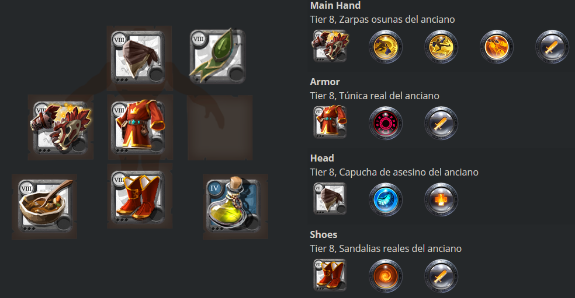Guías de jefes
Basilisco Avaloniano
 Este jefe consta de 2 Fases, es la segunda la que da problemas. La segunda fase llega en un 60 - 65% de la vida máxima.
Este jefe consta de 2 Fases, es la segunda la que da problemas. La segunda fase llega en un 60 - 65% de la vida máxima.
Divida la Party en 2, los cuales se posicionarán a los costados del lagarto.
La cabeza del jefe no debe mirar a ninguna party, el tanque debe ponerse de esa forma y nunca girar el boss para ninguno de sus costados.
Fase 1
 Realmente es facil lo unico destacable es que los DPS deben lanzar veneos (Si tienen un Caller de venenos que sea un dps mejor)
Realmente es facil lo unico destacable es que los DPS deben lanzar veneos (Si tienen un Caller de venenos que sea un dps mejor)
Lanza 2 muros de viento que pueden esquivar con las botas o caminando para esquivarlas.
Tanque: Lanza efectos frontales que son relativamente fáciles de esquivar, consta de 2 alientos uno que te Stunea por mucho tiempo y otro que gira en forma de ( que hace mucho daño.
El jefe golpea con la cola y te empuja por lo tanto nunca te pongas detrás de él (Esto es en todas las Fases).
Fase 2
 Es difícil debido a que el jefe lanza 2 Nukes. uno pequeño y uno grande. uno seguido del otro por un corto tiempo.
Es difícil debido a que el jefe lanza 2 Nukes. uno pequeño y uno grande. uno seguido del otro por un corto tiempo.
El jefe siempre iniciará la segunda fase con el Big Nuke. el jefe empezará a canalizar y después que termine tendrá un pequeño retraso para entonces lanzar el nuke. un segundo antes de que la parte de daño golpee, el jefe hará una cadena de relampagos golpeando a 5 personas cercanas (existe AOE Escalation) entre más personas pegadas haya más te va a pegar.
Si está utilizando la composición del grupo propuesta que se describe en este documento, esta fase es muy fácil, haga que una persona use la reducción de daño justo antes de que el daño golpee para negar la explosión del Big Nuke (Incubus, Black Monk) y que la otra persona use la reducción de daño para el Small Nuke.
El usuario de Iron Root trae un intercambio de Mercenary Hood y todos se agrupan en la parte superior del tanque principal, son golpeados a propósito por el aturdimiento del cono. Use Mercenary Hood, agarre la limpieza del jefe y luego aléjese antes de ser golpeado por el aerosol AoE.
Video Explicativo
HighPriestess Boss - Fantasmas
Video Explicativo
Creditos

Ｉｎｕｓｕｉ#5869
Si ve algún error en la guía, consulta o sugerencia. Contácteme por mi servidor de Discord.
Cualquier ayuda es bien recibida, muchas gracias🍕